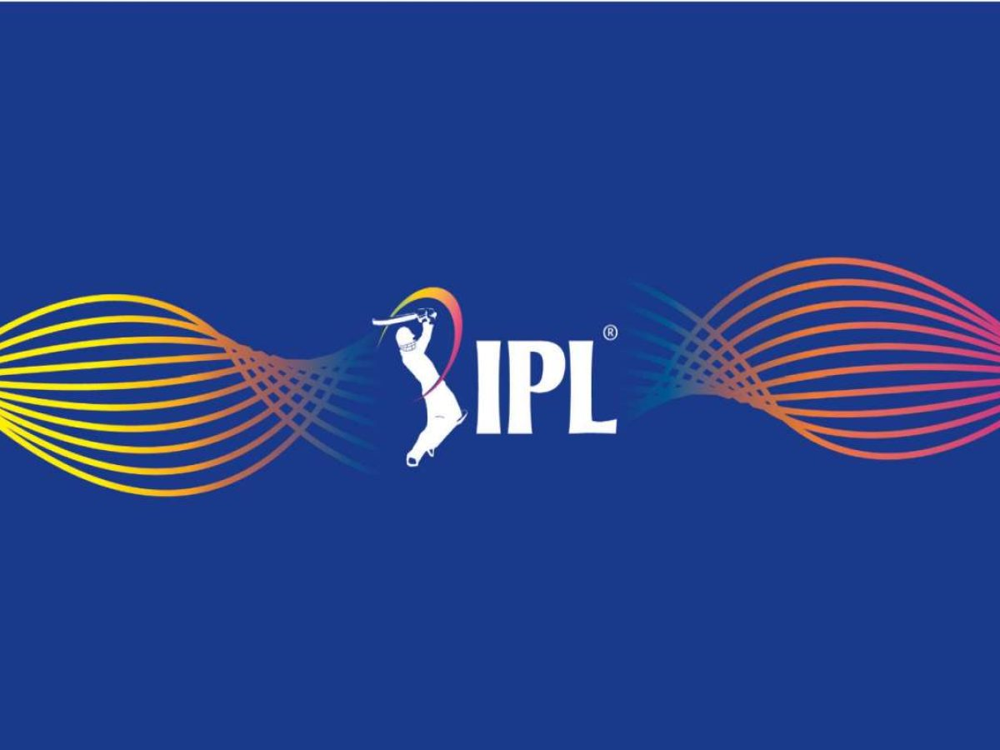

About the Indian Premier League 2026

The Indian Premier League 2026 is one of the most awaited cricket tournaments in the world. Every year, millions of cricket fans eagerly wait for the IPL season because it brings together entertainment, excitement, and world-class cricket on one platform. IPL is not just a cricket tournament; it is a festival celebrated by fans across India and many other countries. The tournament features some of the best international and Indian cricketers playing together for different franchise teams. From powerful batting performances to thrilling last-over finishes, IPL always keeps fans excited throughout the season. In IPL 2026, cricket lovers once again witnessed intense rivalries, unforgettable moments, and energetic stadium atmospheres filled with cheering fans. Teams like Chennai Super Kings, Mumbai Indians, Royal Challengers Bengaluru, and Kolkata Knight Riders continued to attract huge support from fans because of their strong squads and star players.
The IPL 2026 season included many talented players from different countries, making the competition more exciting and competitive. Famous cricketers such as Virat Kohli, MS Dhoni, Rohit Sharma, Jasprit Bumrah, and Shubman Gill played an important role in attracting viewers and entertaining cricket fans with their performances. Young players also got opportunities to showcase their talent on a big stage. IPL has become a dream platform for many upcoming cricketers because performing well in the tournament can help them gain national and international recognition. Every team in IPL 2026 focused on building a balanced squad with strong batsmen, bowlers, all-rounders, and wicketkeepers. Coaches and captains worked hard to create winning strategies for every match, making the tournament highly competitive from beginning to end.
.png)